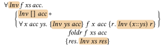
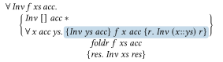
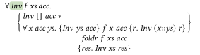
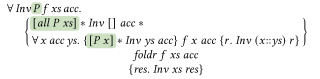
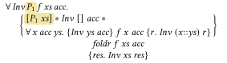
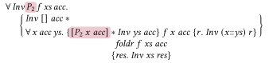
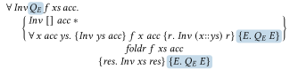

class: title-slide <style> .title-slide .nus-logo img { width: 200px; display: block; margin: 0; float: left; } </style> .nus-logo[] # Automated Verification of Effectful Higher-order Programs <!-- .subtitle[*Thesis Defence*] --> Darius Foo .aligned[ **Advisor**: A/P Chin Wei Ngan **Panel**: A/P Ilya Sergey<br>Prof. Olivier Danvy ] --- # Pure higher-order functions .center-code[ ```ocaml let foldr f xs acc = match xs with | [] -> acc | x :: t -> f x (foldr f t acc) ``` ] Say we want to prove that `foldr (fun x t -> x + t) xs 0` computes the sum of `xs`. --- # Two approaches - __Approach 1__: view as a mathematical function and prove this directly The proof goes straightforwardly by induction on . -- - __Approach 2__: view `foldr` as a program and use a program logic We need a triple for `foldr`, but given one, this can be proved in many tools, e.g. Why3. --- # Imperative higher-order functions Suppose we wanted to prove that this program also computes the sum of `xs`. .center-code[ ```ocaml let l = ref 0 in foldr (fun x () -> l := x + !l) xs (); !l ``` ] -- - __Approach 1__: .fg-red[inapplicable]; 's argument isn't a mathematical function -- - __Approach 2__: this works, via the following separation logic triple -- We still need a triple for `foldr`. Let's see how this is done, starting with the pure case. --- layout: true # The pure case (Why3) --- ```why3 let rec foldr `(ghost inv : list 'a -> 'b -> bool)` (f:'a -> 'b -> 'b) (xs: list 'a) (acc: 'b) : 'b `requires { inv Nil acc }` `requires { forall acc x ys.` `inv ys acc -> inv (Cons x ys) (f x acc) }` `ensures { inv xs result }` = match xs with | Nil -> acc | Cons x t -> `f` x (foldr `inv` f t acc) end ``` .code-span-faded[1, 2, 3, 4, 5, 7] .code-span-hlr[6] --- count: false ```why3 let rec foldr `(ghost inv : list 'a -> 'b -> bool)` (f:'a -> 'b -> 'b) (xs: list 'a) (acc: 'b) : 'b `requires { inv Nil acc }` `requires { forall acc x ys.` `inv ys acc -> inv (Cons x ys) (f x acc) }` `ensures { inv xs result }` = match xs with | Nil -> acc | Cons x t -> f x (foldr `inv` f t acc) end ``` .code-span-faded[2, 3, 4, 5] --- count: false ```why3 let rec foldr `(ghost inv : list 'a -> 'b -> bool)` (f:'a -> 'b -> 'b) (xs: list 'a) (acc: 'b) : 'b `requires { inv Nil acc }` `requires { forall acc x ys.` `inv ys acc -> inv (Cons x ys) (f x acc) }` `ensures { inv xs result }` = match xs with | Nil -> acc | Cons x t -> f x (foldr `inv` f t acc) end ``` .code-span-faded[3, 4, 5] --- count: false ```why3 let rec foldr `(ghost inv : list 'a -> 'b -> bool)` (f:'a -> 'b -> 'b) (xs: list 'a) (acc: 'b) : 'b `requires { inv Nil acc }` `requires { forall acc x ys.` `inv ys acc -> inv (Cons x ys) (f x acc) }` `ensures { inv xs result }` = match xs with | Nil -> acc | Cons x t -> f x (foldr `inv` f t acc) end ``` .code-span-faded[5] --- class: foldr-invariant-slide count: false ```why3 let rec foldr (ghost `inv` : list 'a -> 'b -> bool) (`f`:'a -> 'b -> 'b) (xs: list 'a) (acc: 'b) : 'b requires { inv Nil acc } requires { forall acc x ys. inv ys acc -> inv (Cons x ys) (`f` x acc) } ensures { inv xs result } = match xs with | Nil -> acc | Cons x t -> f x (foldr inv f t acc) end ``` -- .label-code-span3[`f`, a program fragment, is treated as a mathematical function. <br> We can only do this because it is pure.] <style>.foldr-invariant-slide .label-code-span3 { --label-gap: 1em; --label-shift: 5em; }</style> .arrow[ 2 -> 3 ] --- layout: true # The imperative case (Iris) --- --- count: false <p></p> is now a _separation logic_ invariant, which can express state changes. --- count: false <p></p> <img class="math-inline" src="076fb1de630d4392.svg" alt="\inv" style="vertical-align: -0.131pt" /> is now a _separation logic_ invariant, which can express state changes. is now treated as a program. A nested triple is used to say that preserves <img class="math-inline" src="076fb1de630d4392.svg" alt="\inv" style="vertical-align: -0.131pt" />. --- count: false <p></p> <img class="math-inline" src="076fb1de630d4392.svg" alt="\inv" style="vertical-align: -0.131pt" /> is now a _separation logic_ invariant, which can express state changes. is now treated as a program. A nested triple is used to say that preserves <img class="math-inline" src="076fb1de630d4392.svg" alt="\inv" style="vertical-align: -0.131pt" />. Invariant needed: --- layout: false # A problem > Different clients may instantiate _foldr_ with some very different functions, hence it can be hard to give a specification for _f_ that is reasonable and general enough to support all these choices. In particular knowing when one has found a good and provable specification can be difficult in itself. .cite[Lecture Notes on Iris] <!-- — --> --- # A problem Suppose we wanted to rely on a property of the individual list elements. --- count: false # A problem Suppose we wanted to rely on a property of the individual list elements. <p></p> -- We have to propagate it outwards using . Moreover, the unary form of is fixed. --- # A problem Suppose we wanted to rely on a property of consecutive elements of the list. <p></p> We would need a new specification with a property parameterised over . --- # A problem What if we passed the argument ? <p></p> This would require a binary property relating each element and suffix-sum. Again, neither , , nor <img class="math-inline" src="076fb1de630d4392.svg" alt="\inv" style="vertical-align: -0.131pt" /> would be sufficient. --- # Another problem What if we passed the argument ? We would need a creative encoding in either the program (e.g. monad) or logic (e.g. exceptional postcondition)... <p></p> Approach 2 really only supports effects _that can be represented in the underlying logic_. --- # A conundrum To recap, - **Approach 1**: almost automated for pure functions, but .fg-red[inapplicable] to effectful ones - **Approach 2**: requires creativity to come up with specification _and_ instantiate it; "one-spec-per-use problem"; relies on underlying logic being able to represent effects -- .morph-element.morph-table[ | | pure | effectful | | ---------- | ------------------ | ------------------ | | Approach 1 | ✔ | ✘ | | Approach 2 | ✔<sup>\*\*\*</sup> | ✔<sup>\*\*\*</sup> | ] --- # Towards a solution Can we find a version of Approach 1 which overcomes the downsides of Approach 2? .morph-element.morph-table[ | | pure | effectful | | ---------- | ------------------ | ------------------ | | Approach 1 | ✔ | .hlr[✘] | | Approach 2 | ✔<sup>\*\*\*</sup> | ✔<sup>\*\*\*</sup> | ] --- # Thesis .center[Staged logic is an effective means of automating the <br>verification of higher-order effectful programs.] --- # Outline - __Staged logic and higher-order functions__ - Effect handlers and shift/reset - Implementation and mechanisation - Conclusion --- # Outline - __Staged logic and higher-order functions__ 1. How staged logic works (on the <img class="math-inline" src="fc4839c012bfda35.svg" alt="\foldr" style="vertical-align: -2.835pt" /> example) 2. Two more case studies 3. How automation works - Effect handlers and shift/reset - Implementation and mechanisation - Conclusion --- # Staged logic .gap-sm[] -- - Syntactically, a lambda calculus with specifications and logical connectives -- - and are separation logic _assume_/_consume_/_exhale_ and _assert_/_produce_/_inhale_ --- class: staged-logic-slide # Staged logic as a program logic - Staged logic generalises Hoare logic .gap-sm[] .cols-2[ .anchored[ .two.label.at-tl[History] .two.label.at-br[Behaviour] ] ] -- .gap-sm[] - Key to the design is the rule for application of unknown functions <style> .staged-logic-slide .two.label.at-tl { --dx: -1.5em; } .staged-logic-slide .two.label.at-br { --dx: 2.5em; } </style> --- class: staged-logic-slide # Staged logic as a program logic - In the rule of consequence, _refinement_ relates staged logic terms -- - When working with refinement, staged logic can also be seen as a higher-order IVL .gap-sm[] .anchored[ .one.label.at-tl[Higher-order IVL] .one.label.at-br[Specification] ] .gap-md[] <style> .staged-logic-slide .one.label.at-tl { --dx: -6.5em; } .staged-logic-slide .one.label.at-br { --dx: 5em; } </style> --- # A specification for _foldr_ .cols-2[ ```ocaml let foldr f init xs = match xs with | [] => init | h :: t => f h (foldr f init t) ``` ] -- Given `let g x () = l := x + !l`, we would like to prove: --- # Stateful _foldr_ **Inductive case** <img class="math-display" src="faf8ceb745d55a19.svg" alt="\begin{array}{rl@{\hspace{1.5em}}l} & \sens{\xs{=}h{::}t};\ \foldr\ g\ \vunit\ t \bind{r}\, g\ h\ r \\ \stagesubs & \sens{\xs{=}h{::}t};\ \big(\ex{v_1}\sreq{\heapto{l}{v_1}};\sensr{r}{\heapto{l}{(v_1{+}\psum{t})}\sep[r{=}\vunit]}\big) \bind{r}\, g\ h\ r & \text{Ind. hyp.} \\ \stagesubs & \sens{\xs{=}h{::}t};\ \ex{v_1}\sreq{\heapto{l}{v_1}};\sensr{r}{\heapto{l}{(v_1{+}\psum{t})}\sep[r{=}\vunit]}; \\ & \quad \ex{v_2}\sreq{\heapto{l}{v_2}};\sensr{r_1}{\heapto{l}{(v_2{+}h)}\sep[r_1{=}\vunit]} & \text{Unfold } g \\ \stagesubs & \ex{v}\sreq{\heapto{l}{v}};\sensr{r_1}{\heapto{l}{(v{+}\psum{\xs})}\sep[r_1{=}\vunit]} & \textsc{NormEnsReq} \end{array}" /> -- The final step relies on biabduction to symbolically execute the and away. --- # Stateful _foldr_ This proof ultimately comes down to and <!-- ... both of which can be discharged by existing provers. --> --- # Key idea: maintaining precision Approach 2 forces us to commit to an _abstraction_ of the behaviour of an unknown function (e.g. an invariant-parameterised triple) _before we even know what is_. Any choice is necessarily _imprecise_ (wrt the operational semantics) because 's behaviour depends on things external to , i.e. its callers. --- # Key idea: maintaining precision Being able to leave in specifications allows us to precisely track its behaviour, effects, and their ordering, without abstraction. Consequence: proofs stay _syntactic_, making them possible to automate. To keep things tractable, we do, however, want to abstract once we can. --- # Case study: Landin's knot Recursion via a mutable ref holding a closure: -- -- -- The approach: symbolically execute to expose the recursion before doing induction: --- # Case study: _foldl_ A classic question: how do _foldr_ and _foldl_ relate? It suffices that is commutative and associative. Note that is arbitrarily stateful. -- This needs two lemmas: (The other direction is symmetric) --- # Flavours of proof rules 1\. Reduction 2\. Rewriting 3\. Entailment --- # Proof search Applications of three rule families are interleaved in a syntax-directed loop: - Simplifications - Reduction never loses information and is confluent and terminating - Safe entailment and rewriting, e.g. intro, trivial asserts, symbolic execution -- - Search with bounded depth - Unsafe entailment/rewriting rules - User-provided lemmas - Heuristics for quantifiers --- # Outline - Staged logic and higher-order functions - __Effect handlers and shift/reset__ - Implementation and mechanisation - Conclusion <!-- - .morph-element.morph-effects-title[Effect handlers] --> --- # Outline - Staged logic and higher-order functions - __Effect handlers and shift/reset__ 1. Effect handlers and how to reason about them 2. The problem of multishot continuations 3. Shift and reset in staged logic - Implementation and mechanisation - Conclusion --- # Effect handlers <!-- # .morph-element.morph-effects-title[Effect handlers] --> .cols-2[ .col[ ```ocaml type _ Effect.t += XCHG: int -> int Effect.t let exchange n = perform (XCHG n) ``` ```ocaml let client () = exchange (exchange 42) ``` ] ```ocaml let main () = let p = ref 0 in try client () with | v -> v | effect XCHG n, k -> let p0 = !p in p := n; continue k p0 ``` ] --- # Key questions 1. What should we do at `perform`? 2. What should we do at handlers? --- # Existing work 1. What should we do at `perform`? __Require a user-provided _protocol___ .fn[1] 2. What should we do at handlers? __A user-provided _handler invariant_.fn[2] serves as the postcondition of `continue` and must be re-established at the end of the handler__ .footnote[.fn[1] A Separation Logic for Effect Handlers, de Vilhena et al., POPL 2021 <br> .fn[2] A Framework for the Automated Verification of Algebraic Effects and Handlers, Soares et al., CoRR 2023] --- # Protocols .cols-2[ .col[ ```ocaml type _ Effect.t += XCHG: int -> int Effect.t let exchange n = perform (XCHG n) (* ensures !p = x && reply = old !p *) ``` ```ocaml let client () = exchange (exchange 42) (* ensures result = 42 *) ``` ] .col[ ```ocaml let main () = let p = ref 0 in (* invariant: !p = old !p && result = 42 *) try client () with | v -> v | effect XCHG n, k -> (* assume: true *) let p0 = !p in p := n; (* prove: !p = x && p0 = old !p *) continue k p0 (* re-establish invariant *) ``` ] ] --- # Problem: the need to abstract handlers The protocol and handler invariant similarly force an upfront abstraction of every handler the effect will be used under, similar to spec for <img class="math-inline" src="fc4839c012bfda35.svg" alt="\foldr" style="vertical-align: -2.835pt" />. - Both are nontrivial to synthesise, as they are parametrised over higher-order properties - Multiply so for _multishot_ continuations, as the handler invariant must work for any number of resumptions --- # Staged logic 1. What should we do at `perform`? __Treat the effect as unknown__ 2. What should we do at handlers? __Internalise handlers and symbolically execute them away__ --- # Exchange in staged logic Model the both programs: We then prove: --- # Proof The proof in this case is automated by symbolic execution. <img class="math-display" src="87a1b09478f6568f.svg" alt="\begin{array}{rl@{\hspace{1.5em}}l} & \sens{\heapto{p}{0}}; \stagetry{\m{client}}{\xchg{n}}{k}{...} \\ \stagesubs & \sens{\heapto{p}{0}}; & \text{Handle} \\ \phantom{\stagesubs} & \sens{k{=}(\vlambda{x}{\stagetry{\xchg{x}}{\xchg{n}}{k}{...}})} \\ \phantom{\stagesubs} & \ex{o}\sreq{\heapto{p}{o}}; \sens{\heapto{p}{42}}; k\ o \\ \stagesubs & \sens{k{=}(\vlambda{x}{\stagetry{\xchg{x}}{\xchg{n}}{k}{...}})}; & \text{Biab} \\ \phantom{\stagesubs} & \sens{\heapto{p}{42}}; k\ 0 \\ \stagesubs & \sens{\heapto{p}{42}}; \stagetry{\xchg{0}}{\xchg{n}}{k}{...} & \text{Simplify} \\ \stagesubs & \sens{\heapto{p}{42}}; \ex{o}\sreq{\heapto{p}{o}};\sens{\heapto{p}{n}}; k\ o & \text{Handle} \\ \stagesubs & \sensr{r}{\heapto{p}{0}\wedge r{=}42} & \text{Biab} \\ \end{array}" /> Maintaining precision significantly simplifies the problem. --- # Multishot continuations ```ocaml let call b = b := 0; f (); b := !b + 1; assert (!b = 1) ``` --- # Multishot continuations .cols-2[ ```ocaml let call b = b := 0; perform E; b := !b + 1; assert (!b = 1) ❌ ``` ```ocaml let main () = try client () with | effect E n, k -> continue k (); continue k () ``` ] --- # Multishot continuations .inline-children[ ```ocaml let call b = b := 0; perform E; b := !b + 1; assert (!b = 1) ``` .gap-lg[] .gap-lg[] .gap-lg[] .gap-lg[] .gap-lg[] ] - Staged logic: all can be proved by symbolic execution -- - The protocol approach.fn[1]: 287 LoC using Iris, involving an intricate ghost state construction.fn[2] for threading an invariant through the protocol to track the value of the location across calls to the continuation .footnote[.fn[1] Hazel, case_studies/song_et_al_icfp24.v; .fn[2] a history of replies in an auth RA, and one-shot RA for the shared location] --- # Shift and reset .inline-children[ ```ocaml let do_toss () = shift k. k true + k false ``` ```ocaml let toss () = reset (if do_toss () then 1 else 0) ``` ] `shift` captures the continuation up to the enclosing `reset` (here, .boxed[`if □ then 1 else 0`]), reifying it as a function `k`. The result of using `k` twice is `1 + 0` `1`, the number of `true` tosses. --- # Reasoning about shift and reset 1. Encode as effect and use a protocol, parameterised over an "answer postcondition" 2. Non-context-local triples.fn[1] 3. Staged logic (next) .footnote[.fn[1] Mechanized Relational Verification of Concurrent Programs with Continuations, Timany et al., ICFP 2019] --- layout: true # Case study: tossing many coins --- .center-code[ ```ocaml let rec do_toss_n n = if n = 0 then true else let r1 = do_toss () in let r2 = do_toss_n (n-1) in r1 && r2 ``` ] `do_toss_n` tosses coins and takes the conjunction of all the results, i.e. it returns `true` if all the coin tosses give `true`. ??? --- .center-code[ ```ocaml let rec toss_n n = reset (if do_toss_n n then 1 else 0) ``` ] `toss_n` enumerates all the outcomes, returning the number of all-`true` _sequences_ of tosses. There should be only one such sequence: ??? --- For , `toss_n` explores a binary tree of depth 3. There is only one all-`true` path. <style> svg.toss-tree line { stroke: #b0b6bf; stroke-width: 1.5; } svg.toss-tree line.hl { stroke: #d33; stroke-width: 3; } svg.toss-tree circle { fill: #fff; stroke: #555; stroke-width: 1.5; } svg.toss-tree circle.hl { stroke: #d33; stroke-width: 2.5; } svg.toss-tree text { font-family: inherit; font-size: 14px; text-anchor: middle; dominant-baseline: central; fill: #333; } svg.toss-tree text.leaf { font-size: 13px; } svg.toss-tree text.elabel { font-size: 11px; fill: #666; } </style> <svg class="toss-tree" viewBox="0 0 600 260" style="width:70%;display:block;margin:1em auto"> <!-- depth 1 --> <line x1="300" y1="30" x2="150" y2="95" class="hl"/> <line x1="300" y1="30" x2="450" y2="95"/> <!-- depth 2 --> <line x1="150" y1="95" x2="75" y2="160" class="hl"/> <line x1="150" y1="95" x2="225" y2="160"/> <line x1="450" y1="95" x2="375" y2="160"/> <line x1="450" y1="95" x2="525" y2="160"/> <!-- depth 3 (to leaves) --> <line x1="75" y1="160" x2="40" y2="225" class="hl"/> <line x1="75" y1="160" x2="110" y2="225"/> <line x1="225" y1="160" x2="190" y2="225"/> <line x1="225" y1="160" x2="260" y2="225"/> <line x1="375" y1="160" x2="340" y2="225"/> <line x1="375" y1="160" x2="410" y2="225"/> <line x1="525" y1="160" x2="490" y2="225"/> <line x1="525" y1="160" x2="560" y2="225"/> <!-- edge labels --> <text class="elabel" x="215" y="54">T</text> <text class="elabel" x="385" y="54">F</text> <text class="elabel" x="108" y="118">T</text> <text class="elabel" x="192" y="118">F</text> <text class="elabel" x="408" y="118">T</text> <text class="elabel" x="492" y="118">F</text> <text class="elabel" x="53" y="183">T</text> <text class="elabel" x="97" y="183">F</text> <text class="elabel" x="203" y="183">T</text> <text class="elabel" x="247" y="183">F</text> <text class="elabel" x="353" y="183">T</text> <text class="elabel" x="397" y="183">F</text> <text class="elabel" x="503" y="183">T</text> <text class="elabel" x="547" y="183">F</text> <!-- internal nodes --> <circle cx="300" cy="30" r="10"/> <circle cx="150" cy="95" r="10" class="hl"/> <circle cx="450" cy="95" r="10"/> <circle cx="75" cy="160" r="10" class="hl"/> <circle cx="225" cy="160" r="10"/> <circle cx="375" cy="160" r="10"/> <circle cx="525" cy="160" r="10"/> <!-- leaves --> <text class="leaf" x="40" y="232" fill="#d33"><tspan font-weight="bold">1</tspan></text> <text class="leaf" x="110" y="232">0</text> <text class="leaf" x="190" y="232">0</text> <text class="leaf" x="260" y="232">0</text> <text class="leaf" x="340" y="232">0</text> <text class="leaf" x="410" y="232">0</text> <text class="leaf" x="490" y="232">0</text> <text class="leaf" x="560" y="232">0</text> </svg> --- The proof requires this lemma, itself proved by induction: 1. The statement must be generalised over an accumulator of intermediate results 2. The continuation is applied at both and , so we need to know the behaviours of both This sort of generalisation is difficult to automate, so this statement is user-provided. --- A stateful variant: suppose we instrument the program to count the number of continuation resumptions, using a global `ref` `x`. .center-code[ ```ocaml let do_toss () = shift k. x := !x+1; let r1 = k true in x := !x+1; let r2 = k false in r1 + r2 ``` ] This counts the number of edges in the tree, which is . --- The statement and lemma are accordingly generalised: but this can otherwise be proved the same way, without any new machinery. ??? --- layout: false # Outline - Staged logic and higher-order functions - Effect handlers and shift/reset - __Implementation and mechanisation__ - Conclusion --- # Implementation and mechanisation - An SMT-based verifier, Heifer.fn[1] - Two mechanisations in Rocq, based on 1. simple behavioural refinement 2. contextual refinement - Present effort .footnote[.fn[1] Higher-order Effectful Imperative Function Entailments and Reasoning] --- # Heifer Accepts annotated OCaml programs and searches for proofs, assuming user-provided lemmas. Built on Why3 (SMT, non-foundational). Some interactive facilities. .zoom--1.inline-children.align-top[ ```ocaml let [@pure] rec sum (li: int list) : int = match li with | [] -> 0 | x :: xs -> x + sum xs ``` ```ocaml let rec foldr f li acc = match li with | [] -> acc | x :: xs -> f x (foldr f xs acc) ``` ```ocaml let foldr_sum xs k (*@ ens res=sum(xs)+k @*) = let g c t = c + t in foldr g xs k ``` ] --- # Heifer Case studies - foldr and many small higher-order programs - Loop fusion - Regex interpreter - append, times, and toss using shift/reset --- # Mechanisation 1 - Deeply-embedded syntax, `Inductive` big-step semantics - Shallowly-embedded binders (and separation logic) - Function pointers instead of lambda due to positivity restriction - Bubble-up semantics for shift/reset - Associativity of bind fails; experimental fix using bisimulation of bubbles - Some tactic automation --- # Mechanisation 1 - Case studies - All the `foldr` examples - Landin's knot - append using shift/reset (bisimulation) --- class: no-heading-padding # Mechanisation 1 .center.zoom--15[  ] --- # Mechanisation 2 - Lambda calculus fragment with deeply-embedded binders - (Meta-)contextual small-step semantics for shift/reset - Biorthogonal logical relation to define contextual refinement - IxFree for step-indexed relations --- # Towards a unified system in Lean My present effort is a Lean implementation of all three systems. Its metaprogramming and extensibility allow: - A usable, Heifer-like frontend - Abstraction over binder representation - Implementing sophisticated automation --- class: no-heading-padding # Lean: simple behavioural refinement .center[ .zoom--15[] ] --- class: no-heading-padding # Lean: higher-level tactics .center[ .zoom--15[] ] --- class: no-heading-padding # Lean: Heifer (against axiomatization) .center[ .zoom--15[] ] --- # Outline - Staged logic and higher-order functions - Effect handlers and shift/reset - Implementation and mechanisation - __Conclusion__ --- # Thesis .center[Staged logic is an effective means of automating the <br>verification of higher-order effectful programs.] -- Contributions - A novel refinement-based logic for reasoning about higher-order programs with imperative and control effects - Effective: amenable to proof search, with an implementation (Heifer) - Mechanisations of two useful fragments in Rocq --- # Future work - Mechanise the whole framework - True higher-order store - WIP port of indirection theory - A unified verifier in Lean - Effect-based concurrency via (contextual) refinement --- # Thank you! .center.zoom--10[] .center[https://dariusf.github.io/thesis] ---